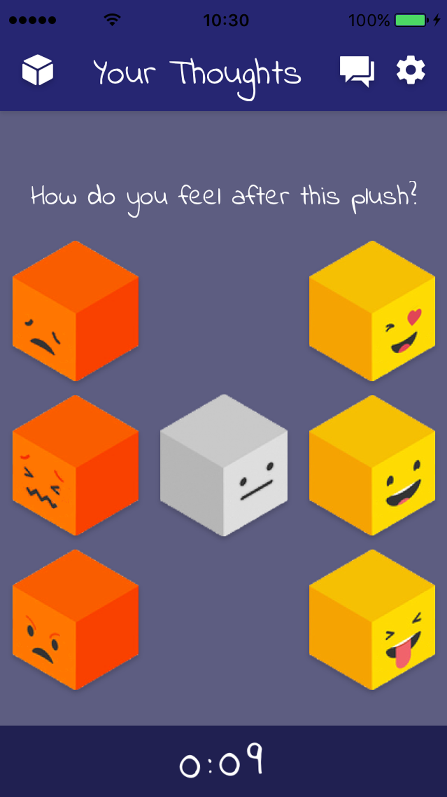

- 

Plush!
Whether you are looking to make new friends or looking for a relationship, Plush! is a unique, fun and anonymous way of meeting new people (seriously) and keeping into contact with them.
How does it work?
It starts anonymously with a voice chat.
You found the other person quite funny.
That's cool because that person liked the way you laughed!
Now you can meet for the first time in a real video chat.
Hey, that went pretty well too. Turns out you like the same style!
What's awesome is that you are now both connected and can continue this conversation on your own terms.
What happens if you didn't enjoy either the audio or video Plush? It's ok, we'll let the other party know while you move on to your next Plush!
Sit comfortably, put on your headphones and start your own Plush!
100% free to use with easy registration using Facebook.
Requires iOS 8+ and compatible with iOS 10.